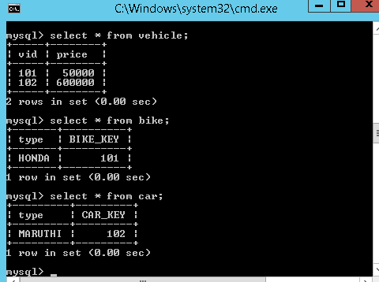
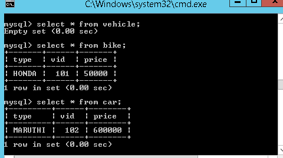
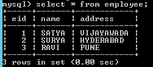
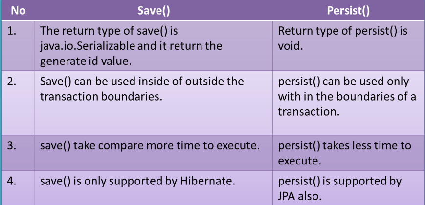

Hibernate
EmployeeBo.java
public class EmployeeBo {
private int eid;
private String name;
private String address;
//setters / getters
}
//Example: EmployeeBo.hbm.xml
<hibernate-mapping>
<class name="bo.EmployeeBo" table="employee">
<id name="eid" column="eid">
<generator class="assigned" />
</id>
<property name="name" column="name" />
<property name="address" column="address" />
</class>
</hibernate-mapping>
//hibernate.cfg.xml
<? xml version='1.0' encoding='utf-8'?>
<! DOCTYPE hibernate-configuration PUBLIC
"-//Hibernate/Hibernate Configuration DTD 3.0//EN"
"http://hibernate.sourceforge.net/hibernate-configuration-3.0.dtd">
<hibernate-configuration>
<session-factory>
<! -- Database connection settings -->
<property name="connection.driver_class">com.mysql.jdbc.Driver</property>
<property name="connection.url">jdbc:mysql://localhost:3306/mydb</property>
<property name="connection.username">root</property>
<property name="connection.password">root</property>
<property name="connection.pool_size">1</property>
<!-- Hibernate Properties -->
<property name="dialect">org.hibernate.dialect.MySQLDialect</property>
<property name="show_sql">true</property>
<property name="hbm2ddl.auto">validate</property>
<!-- Mapping file name(s)-->
<mapping resource="res/employee.hbm.xml"/>
</session-factory>
</hibernate-configuration>
public class EmployeeSave {
public static void main(String[] args) {
Configuration cfg = new Configuration();
cfg.configure("hibernate.cfg.xml");
SessionFactory factory = cfg.buildSessionFactory();
Session session = factory.openSession();
EmployeeBo bo = new EmployeeBo();
bo.setEid(5);
bo.setName("DILEEP");
bo.setAddress("BANGLORE");
Transaction tx = session.beginTransaction();
session.save(bo);
System.out.println("Employee Data saved successfully.....!!");
tx.commit();
session.close();
factory.close();
}
}
Session class methods
Select
Object get(Class , Serializable id)
Object load(Class, Serializable id)
Insert
Serializable save(Object object)
void persist(Object object)
void saveOrUpdate(Object object)
Update
Object merge(Object object)
void update(Object object)
Delete
void delete(Object object)
Clear
void evict(Object object) : Remove this instance from the session cache.
void clear() : Completely clear the session.
Other
boolean isDirty() : Does this session contain any changes which must be synchronized with the database? In other words, would any DML operations be executed if we flushed this session?
void refresh(Object object)
Re-read the state of the given instance from the underlying database.
1.Table per class hierarchy
Vehicle.hbm.xml
<hibernate-mapping>
<class name="inheritance.Vehicle" table="vehicle">
<id name="vid" column="vid"></id>
<discriminator column="DISC" type="string"/>
<property name="price" column="price"></property>
<subclass name="inheritance.Bike" discriminator-value="BIKE_DISC">
<property name="biketype" column="biketype"></property>
</subclass>
<subclass name="inheritance.Car" discriminator-value="CAR_DISC">
<property name="cartype" column="cartype"></property>
</subclass>
</class>
</hibernate-mapping>

2. Table per sub-class hierarchy
Vehicle.hbm.xml
<hibernate-mapping>
<class name="inheritance.Vehicle" table="vehicle">
<id name="vid" column="vid"></id>
<property name="price" column="price"></property>
<joined-subclass name="inheritance.Bike" table="bike">
<key column="BIKE_KEY" />
<property name="biketype" column="type"></property>
</joined-subclass>
<joined-subclass name="inheritance.Car" table="car">
<key column="CAR_KEY" />
<property name="cartype" column="type"></property>
</joined-subclass>
</class>
</hibernate-mapping>

3.Table per concrete class hierarchy
Vehicle.hbm.xml
<hibernate-mapping>
<class name="inheritance.Vehicle" table="vehicle">
<id name="vid" column="vid"></id>
<property name="price" column="price"></property>
<union-subclass name="inheritance.Bike" table="bike">
<property name="biketype" column="type"></property>
</union-subclass>
<union-subclass name="inheritance.Car" table="car">
<property name="cartype" column="type"></property>
</union-subclass>
</class>
</hibernate-mapping>

If we want to select a Complete Object from the database, we use POJO class
reference in place of * while constructing the query
// In SQL
sql> select * from Employee
Note: Employee is the table name.
// In HQL
hql> select s from EmployeeBo s
[ or ]
from EmployeeBo s
Note: here s is the reference of EmployeeBo
If we want to load the Partial Object from the database that is only selective properties of an objects, then we need to replace column names with POJO class variable names
// In SQL
sql> select eid,name,address from Employee
Note: eid,name,address are the columns of Employee the table.
// In HQL
hql> select s.eid,s.name,s.address from EmployeeBo s
What are advantages of Hibernate?
-
Lazy Loading
-
Caching
-
You do not need to maintain JDBC code , Hibernate takes care of it.
-
You need to write less code
-
It provides high level object oriented API
What is caching?
Anything you can do to minimize traffic between a database and an application server is probably a good thing. In theory, an application ought to be able to maintain a cache containing data already loaded from the database, and only hit the database when information has to be updated. When the database is hit, the changes may invalidate the cache
First Level Cache & Second Level Cache?
Every fresh session having its own cache memory, Caching is a mechanism for storing the loaded objects into a cache memory.
The advantage of cache mechanism is, whenever again we want to load the same object from the database then instead of hitting the database once again, it loads from the local cache memory only, so that the no. of round trips between an application and a database server got decreased. It means caching mechanism increases the performance of the application.
In hibernate we have two levels of caching
-
First Level Cache (Session Cache)
-
Second Level Cache (Session Factory Cache/ JVM Level Cache)
1.First Level Cache
-
By default, for each hibernate application, the first level cache is automatically enabled.
We can’t Enable/Disable first level cache -
the first level cache is associated with the session object and scope of the cache is limited to one session only
-
When we load an object for the first time from the database then the object will be loaded from the database and the loaded object will be stored in the cache memory maintained by that session object
-
If we load the same object once again, with in the same session, then the object will be loaded from the local cache memory not from the database
-
If we load the same object by opening other session, then again the object will load from the database and the loaded object will be stored in the cache memory maintained by this new session
Example:
Session session = factory.openSession();
Object ob1 = session.get(Actor.class, new Integer(101)); //1
Object ob2 = session.get(Actor.class, new Integer(101));//2
Object ob3 = session.get(Actor.class, new Integer(101));//3
session.close();//4
Session ses2 = factory.openSession();
Object ob5 = ses2.get(Actor.class, new Integer(101));//5
1, We are loaded object with id 101, now it will load the object from the database only as its the first time, and keeps this object in the session cache
2,3 i tried to load the same object 2 times, but here the object will be loaded from the stored cache only not from the database, as we are in the same session
4, we close the first session, so the cache memory related this session also will be destroyed
5, again i created one new session and loaded the same object with id 101, but this time hibernate will loads the object from the database
if we want to remove the objects that are stored in the cache memory, then we need to call either evict() or clear() methods
2.Second Level Cache
Whenever we are loading any object from the database, then hibernate verify whether that object is available in the local cache(first level cache) memory of that particular session, if not available then hibernate verify whether the object is available in global cache(second level cache), if not available then hibernate will hit the database and loads the object from there, and then first stores in the local cache of the session , then in the global cache
SessionFactory holds the second level cache data. It is global for all the session objects and not enabled by default.
Different vendors have provided the implementation of Second Level Cache
-
EH Cache
-
OS Cache
-
Swarm Cache
-
JBoss Cache
To enable second level cache in the hibernate, then the following 3 changes are required
1.Add provider class in hibernate configuration file
<property name="hibernate.cache.provider_class">
org.hibernate.cache.EhCacheProvider
</property>
2.Configure cache element for a class in hibernate mapping file
<cache usage="read-only" />
-
read-only: caching will work for read only operation.
-
nonstrict-read-write: caching will work for read and write but one at a time.
-
read-write: caching will work for read and write, can be used simultaneously.
-
transactional: caching will work for transaction.
3.create xml file called ehcache.xml and place where you have mapping and configuration xml’s
Example:
public class Employee {
private int eid;
private String name;
private String address;
//Setters & Getteers
}
Employee.hbm.xml
<hibernate-mapping package="cache">
<class name="Employee" table="employee">
<cache usage="read-only" />
<id name="eid" column="eid">
<generator class="native"></generator>
</id>
<property name="name"></property>
<property name="address"></property>
</class>
</hibernate-mapping>
ehcache.xml
<?xml version="1.0"?>
<ehcache>
<defaultCache maxElementsInMemory="100" eternal="false"
timeToIdleSeconds="120" timeToLiveSeconds="200" />
<cache name="cache.Employee" maxElementsInMemory="100"
eternal="false" timeToIdleSeconds="5" timeToLiveSeconds="200" />
</ehcache>
hibernate.cfg.xml
<hibernate-configuration>
<session-factory>
<property> Driver Class, URL, Username, password, etc </property>
<property name="cache.provider_class">org.hibernate.cache.EhCacheProvider</property>
<property name="hibernate.cache.use_second_level_cache">true</property>
<mapping resource="cache/employee.hbm.xml" />
</session-factory>
</hibernate-configuration>
CacheDemo.java
package cache;
import org.hibernate.*;
import org.hibernate.cfg.*;
public class CacheDemo {
public static void main(String[] args) {
//1.Load Configuration
Configuration cfg = new Configuration();
cfg.configure("hibernate.cfg.xml");
//2.Create Session
SessionFactory sf = cfg.buildSessionFactory();
Session session = sf.openSession();
//3.Perform Operations
Object ob = session.load(Employee.class, new Integer(1));
Employee bo = (Employee) ob;
System.out.println("SELECTED DATA\n ================");
System.out.println("SNO : "+bo.getEid());
System.out.println("NAME : "+bo.getName());
System.out.println("ADDRESS : "+bo.getAddress());
}
}

What are some core interfaces of hibernate?
-
Configuration
-
SessionFactory
-
Session
-
Transaction
-
Query and Criteria interface
Difference between get() vs load() method in Hibernate? (detailed answer)
The key difference between get() and load() method is that
-
load() will throw an exception if an object with id passed to them is not found
-
get() will return **null.**
Another important difference is that load can return proxy without hitting the database unless required (when you access any attribute other than id) but get() always go to the database, so sometimes using load() can be faster than the get() method.
It makes sense to use the load() method if you know the object exists but get() method if you are not sure about object’s existence.
| Parameter | get | load |
|---|---|---|
| Database retrieval | It always hits the database | It does not hit database |
| If null | If it does not get the object with id, it returns null, null in databse | If it does get the object with id, it throws ObjectNotFound in Cache |
| Proxy | It returns real object | It returns proxy object |
| Use | If you are not sure if object with id exists or not, you can use get | If you are sure about existence of object, you can use load |
What is the difference between save() and persist() method in Hibernate?
-
Serializable Object save() returns a Serializable object
-
void persist() method is void, so it doesn’t return anything.

What is the difference between and merge and update?
Employee emp1 = new Employee();
emp1.setEmpId(100);
emp1.setEmpName("Dinesh");
Session session1 = createNewHibernateSession();
session1.saveOrUpdate(emp1);
session1.close();
//emp1 object in detached state now
emp1.setEmpName("Dinesh Rajput");//Updated Name
//Create session again
Session session2 = createNewHibernateSession();
Employee emp2 =(Employee)session2.get(Employee.class, 100);
//emp2 object in persistent state with id 100
//below we try to make on detached object with id 100 to persistent state by using update method of hibernate
session2.update(emp1);//It occurs the exception NonUniqueObjectException because emp2 object is having employee with same empid as 100 in Cache.Here cache is not Empty. See diageram.
//to avoid this exception we are using merge like given below instead of session.update(emp1);
session2.merge(emp1); //it merge the object state with emp2
session2.update(emp1); //Now it will work with exception

Update:
-
Suppose we are dealing with any employee object in the same session then we should use update() or saveOrUpdate() method.
-
if you are sure that the session does not contains an already persistent instance with the same identifier,then use update to save the data in hibernate
Merge:
-
Suppose we are creating a session and load an employee object. Now object in session cache. If we close the session at this point and we edit state of object and tried to save using update() it will throw exception. To make object persistent we need to open another session. Now we load same object again in current session. So if we want to update present object with previous object changes we have to use merge() method. Merge method will merge changes of both states of object and will save in database.
-
if you want to save your modifications at any time with out knowing about the state of an session, then use merge() in hibernate.
Different between cascade and inverse
Many Hibernate developers are confusing about the cascade option and inverse keyword. In some ways. They really look quite similar at the beginning; both are related with relationship.
However, there is no relationship between cascade and inverse, both are totally different notions.
1.inverse
This is used to decide which side is the relationship owner to manage the relationship (insert or update of the foreign key column).
Example
In this example, the relationship owner is belonging to stockDailyRecords (inverse=true).
<!-- Stock.hbm.xml -->
<hibernate-mapping>
<class name="Stock" table="stock">
...
<set name="stockDailyRecords" table="stock_daily_record" inverse="true">
<key>
<column name="STOCK_ID" not-null="true" />
</key>
<one-to-many class="StockDailyRecord" />
</set>
...
When you save or update the stock object
session.save(stock);
session.update(stock);
Hibernate will only insert or update the STOCK table, no update on the foreign key column. More detail example here…
2.cascade
In cascade, after one operation (save, update and delete) is done, it decide whether it need to call other operations (save, update and delete) on another entities which has relationship with each other.
Example
In this example, the cascade=”save-update” is declare on stockDailyRecords.
<!-- Stock.hbm.xml -->
<hibernate-mapping>
<class name="com.mkyong.common.Stock" table="stock" ...>
...
<set name="stockDailyRecords" table="stock_daily_record"
cascade="save-update" inverse="true">
<key>
<column name="STOCK_ID" not-null="true" />
</key>
<one-to-many class="com.mkyong.common.StockDailyRecord" />
</set>
...
Copy
When you save or update the stock object
session.save(stock);
session.update(stock);
It will inserted or updated the record into STOCK table and call another insert or update statement (cascade=”save-update”) on StockDailyRecord. More detail example here…
Conclusion
In short, the -inverse” is decide which side will update the foreign key, while -cascade” is decide what’s the follow by operation should execute. Both are look quite similar in relationship, but it’s totally two different things. Hibernate developers are worth to spend time to research on it, because misunderstand the concept or misuse it will bring serious performance or data integrity issue in your application.
Does SessionFactory is thread-safe in Hibernate? (detailed answer)
SessionFactory is both Immutable and thread-safe and it has just one single instance in Hibernate application. It is used to create Session object and it also provide caching by storing SQL queries stored by multiple session. The second level cache is maintained at SessionFactory level.
Does Hibernate Session interface is thread-safe in Java? (detailed answer)
No, Session object is not thread-safe in Hibernate and intended to be used with-in single thread in the application.
What is difference between getCurrentSession() and openSession() in Hibernate?
openSession() When you call SessionFactory.openSession, it always create new Session object afresh and give it to you. As session objects are not thread safe, you need to create one session object per request in multithreaded environment and one session per request in web applications too.
getCurrentSession() When you call SessionFactory. getCurrentSession , it creates a new Session if not exists , else use same session which is in current hibernate context. It automatically flush and close session when transaction ends, so you do not need to do externally.If you are using hibernate in single threaded environment , you can use getCurrentSession, as it is faster in performance as compare to creating new session each time.
You need to add following property to hibernate.cfg.xml to use getCurrentSession method
<session-factory>
<!-- Put other elements here -->
<property name="hibernate.current_session_context_class"></property>
</session-factory>
If you do not configure above property, you will get error as below.
Exception in thread “main” org.hibernate.HibernateException: No CurrentSessionContext configured!
Can you declare Entity(Bean) class as final in hibernate?
Yes, you can declare entity class as final but it is not considered as a good practice because hibernate uses proxy pattern for lazy initialization,
If you declare it as final then hibernate won’t be able to create sub class and won’t be able to use proxy pattern, so it will limit performance and improvement options.
Does entity class (Bean) in hibernate require no arg constructor?
Yes, Entity class in hibernate requires no arg constructor because Hibernate use reflection to create instance of entity class and it mandates no arg constructor in Entity class.
How do you log SQL queries issued by the Hibernate framework in Java application?
You can procedure the show_sql property to log SQL queries delivered by the Hibernate framework
What is named SQL query in Hibernate?
Named queries are SQL queries which are defined in mapping document
using **
<sql-query name="findStudentByRollNumber">
<!--[CDATA[
select * from Student student where student.rollNumber = :rollNumber
]]-->
</sql-query>
you can define named query in hibernate either by using annotations or XML mapping file, as I said above. @NameQuery is used to define single named query and @NameQueries is used to define multiple named query in hibernate.
@NamedQueries({
@NamedQuery(
name = "findStockByStockCode",
query = "from Stock s where s.stockCode = :stockCode"
)
})
Explain Criteria API
Criteria is a simplified API for retrieving entities by composing Criterion objects. This is a very convenient approach for functionality like -search” screens where there is a variable number of conditions to be placed upon the result set.
Example:
List employees = session.createCriteria(Employee.class)
.add(Restrictions.like(-name", -a%") )
.add(Restrictions.like(-address", -Boston"))
.addOrder(Order.asc(-name") )
.list();
How do you switch between relational databases without code changes?
Using Hibernate SQL Dialects, we can switch databases. Hibernate will generate appropriate hql queries based on the dialect defined.
What is Hibernate proxy?
The proxy attribute enables lazy initialization of persistent instances of the class. Hibernate will initially return CGLIB proxies which implement the named interface. The actual persistent object will be loaded when a method of the proxy is invoked.
What is automatic dirty checking?
Automatic dirty checking is a feature that saves us the effort of explicitly asking Hibernate to update the database when we modify the state of an object inside a transaction.
If Dirty-checking is enabled, if we forget to call save() before the commit, dirty-checking automatically saves the data into the database.
Consider the below code which loads a simple Entity from the database and updates it.
public static void testUpdate() {
Session session = sessionFactory.openSession();
Transaction transaction = session.beginTransaction();
Entity entity = (Entity) session.load(Entity.class, 1);
entity.setData("Updating the data");
transaction.commit();
session.close();
}
Although we haven’t made any session.update(entity) call, the logs indicate that the database record was updated successful
What is query cache in Hibernate?
.Query cache can be used along with second level cache for improved performance. QueryCache actually stores the result of SQL query for future calls. Hibernate support various open source caching solution to implement Query cache e.g. EhCache
What are two types of Collections in hibernate?
-
Sorted Collection
-
Ordered Collection
| Parameter | Sorted Collection | Ordered Collection |
|---|---|---|
| Sorting | Sorted collection uses java’s sorting API to sort the collection. | Ordered Collections uses order by clause while retrieval of objects |
| Default | It is enabled by default | It is not enabled by default, you need to enable it explicitly |
What is lazy loading in hibernate?
Sometimes you have two entities and there’s a relationship between them. For example, you might have an entity called University and another entity called Student
public class University {
private String id;
private String name;
private String address;
private List<Student> students;
// setters and getters
}
Now when you load a University from the database, JPA loads its id, name, and address fields for you. But you have two options for students: to load it together with the rest of the fields (i.e. eagerly) or to load it on-demand (i.e. lazily) when you call the university’s getStudents() method.
@OneToMany(cascade=CascadeType.ALL, fetch=FetchType.EAGER)
@JoinColumn(name="countryId")
private List<Student> students;
FetchType.LAZY : It fetches the child entities lazily, that is, at the time of
fetching parent entity it just fetches proxy (created by cglib or any other
utility) of the child entities and when you access any property of child entity
then it is actually fetched by hibernate.
FetchType.EAGER: it fetches the child entities along with parent.
Lazy initialization improves performance by avoiding unnecessary computation and reduce memory requirements.
Eager initialization takes more memory consumption and processing speed is slow.
lazy="true/false in xml